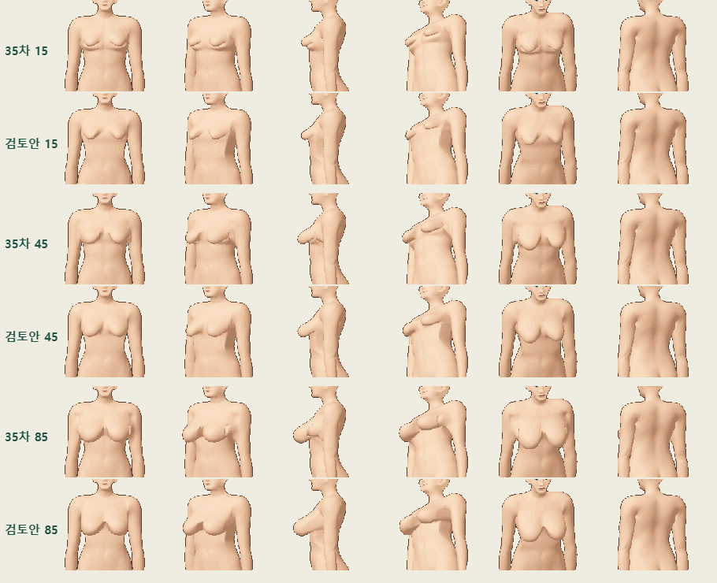

두 창은 같은 크기·시점·팔 각도로 움직입니다. 크기 15의 정면에서 밑선을 보고, 옆과 아래로 돌려 같은 선이 어디로 이어지는지 확인하세요.
기본형과 추가 20종
35차 보완 실험 기록
작은 형태에서 겹쳐 보이던 앞 밑선은 옅어졌습니다. 측면과 사선에는 도판에서 더 멀어진 구간이 있어, 오른쪽을 비교 시안으로 남겼습니다.
원래 가슴이 있던 메시 위에 작은 형태를 입히면, 새 형태의 바깥에 종전 볼륨이 남습니다. 두 판을 같은 정면·사선·측면·밑면·위·후면에 놓고 크기 15·45·85를 비교했습니다. 오른쪽은 피부의 이웃 관계를 따라 종전 접힘을 먼저 펴고, 그 위에 35차와 같은 원전 윤곽을 배치한 결과입니다. 크기 15의 사선에서 두 겹의 명암이 가장 뚜렷하게 줄었습니다. 기본형의 승인은 열어 둡니다.
하부의 둥근 면과 흉벽 부착
측면에서는 전방 돌출점을 지나 가장 낮은 곳을 돈 뒤 다시 위·뒤로 향하는 윤곽을 추적했습니다. 흉벽 쪽에서 가려지는 부착과, 정면에서 빛을 받아 어둡게 보이는 경계는 서로 다른 정보입니다. 조직 해부 연구에서는 관찰이 가능한 바깥쪽 구간에서 여러 층의 근막이 피부 주변에서 깊은 근막을 향해 연결되는 양상을 기술합니다. 그림에서는 이 지식을 부착 위치를 묶는 제약으로 사용했습니다. 사람마다 같은 높이로 선을 한 번 더 긋는 근거로 사용할 수는 없습니다. 하부 주름의 근막 해부 연구
이전 형상의 접힘을 펴는 순서
35차의 작은 형태에서 돌출량을 줄여도 옛 밑선은 남았습니다. 원래 접힌 피부의 두 점은 정면 평면에서 거의 같은 좌표를 가질 수 있기 때문입니다. 실험안은 정면 피부의 이웃 정점을 모아 고정된 경계 안에서 재배치하고, 그 좌표로 흉곽과 맞닿는 표면을 만들었습니다. 그다음 같은 상·하부 종단선과 가로 굴곡을 입혔습니다. 어깨에 속한 점과 등의 점은 그 계산 범위에서 제외했습니다. 삼각형 표면을 평면 좌표에 대응시키는 원리를 참고했으며, 여기서 사용한 가중 평균은 구현을 위해 선택한 근사입니다. Desbrun·Meyer·Alliez의 표면 매개화 원전

원자료와 다른 지점
크기 45에서 기준 측면 칸의 윤곽 차이는 도판 칸 대각선의 1.39%에서 1.62%로 커졌습니다. 기준 사선 칸의 가까운 밑선도 4.21%에서 5.15%로 커졌고, 먼 쪽은 3.89%에서 3.71%로 줄었습니다. 이 수치는 두 끝이나 표식의 위치를 맞춘 다음 윤곽 간 거리를 잰 값입니다. 가시 윤곽 전체를 같은 카메라 조건으로 확인하는 과정이 남아 있습니다. Wallner 등의 지정 도판
팔 올림과 바스트 모핑
팔 올림은 겨드랑이 가까운 표면의 당김을 만들고, 짧은 자극에 대한 움직임은 움직일 수 있는 피부점에 감쇠 진동을 가합니다. 크기와 하부의 반환량이 응답의 세기와 주기에 관여합니다. 위아래·좌우·앞뒤를 골라 같은 시간에서 두 판을 멈추면, 부착된 쪽과 자유롭게 움직이는 쪽을 구분해 관찰할 수 있습니다. 2.20초에는 정지한 자세로 정확히 돌아가도록 구현했습니다. 실제 인체의 질량·탄성·감쇠를 이 도판에서 측정할 수 없으므로, 시간과 진폭은 이 캐릭터의 시험 설정입니다. 팔을 올린 채 동작을 반복할 때 겨드랑이에서 옆가슴으로 이어지는 선과 밑면 접힘을 함께 확인합니다.